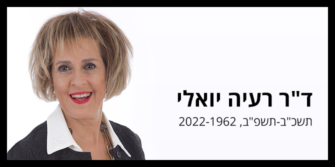

רעיה יואלי הצטרפה לבית ספר מנדל למנהיגות חינוכית בשנת 2008 כחברת סגל. היא הייתה אחראית על תחום ההנחיה האישית ופיתוחו, ועל ליווי העמיתים במעבר משלב הלימודים בחזרה לעולם המעשה. נוסף על כך, רעיה הרצתה, הדריכה, ליוותה ופיתחה תכנים ופדגוגיות בתחומי השלומות הקבוצתית, המנהיגות והניהול וכן הרצתה בתוכנית מנדל למנהיגות אקדמית. היא אף שימשה כיועצת וכמנחה בתוכניות שונות לפיתוח ניהול ומנהיגות, בהן תוכנית הצוערים לשירות המדינה.
את עבודת הדוקטורט שלה השלימה רעיה בעבודה סוציאלית באוניברסיטה העברית בירושלים. לצד לימודי טיפול משפחתי ומחקר שעסק בחקר סיפורי חיים של זוגות שהתגרשו בגישור, התמקדה בעבודה כמגשרת עם משפחות המתמודדות עם משבר הגירושין והשינוי הכרוך בו. מתוך המחקר התאורטי והפרקטיקה נפגשה רעיה עם הגישה הנרטיבית, שהובילה אותה בחייה המקצועיים והאישיים.
לאורך שנים רבות ליוותה מנהלים, יזמים ואנשי מקצוע בתהליכי שינוי, בגיבוש זהות מקצועית ובבנייה של חזון ארגוני המושתת על החזון האישי. לצד הפרקטיקה והליווי האנושי בקליניקה, רעיה פיתחה קורס אקדמי לתואר שני באוניברסיטה העברית, העוסק בקשר שבין חזון ארגוני לחזון אישי, וחוקר את סיפוריהם של מנהיגים מובילי חזון.
נוסף על כך עבדה רעיה במערכת הצבאית בפיתוח ובליווי של מפקדים במסגרת פרויקט "נערי רפול", שימשה כחברת הסגל האקדמי במכללה לחינוך על שם דוד ילין בירושלים – שם הרצתה בחוג להשכלת מבוגרים, ניהלה את המכון להנחיית קבוצות הורים, ואף שימשה כראש התוכנית להכשרת מנהלי בתי ספר. בעשור האחרון, ועם שנים רבות של ניסיון בתחומי ייעוץ ופיתוח מנהיגות, רעיה פיתחה והנחתה תוכניות הכשרה בתחומי ניהול ומנהיגות, מיומנויות הדרכה והנחיה.
בספרה "לשם שינוי” שיצא בשנת 2017, מתארת רעיה את השיטה הייחודית שפיתחה להתמודדות עם אתגרים לשינוי הקריירה באמצע החיים, על-ידי התבוננות בנרטיב האישי. בעקבות התהודה הרבה שעורר הספר פיתחה רעיה קורסי הכשרה שונים בגישת "לשם שינוי", כדי להפיץ את הבשורה ולבסס את התחום.
רעיה הותירה בלכתה בן זוג, צבי, וארבעה ילדים – רוני, חן, עדי ודורון.
מתוך דברי ההספד של דני בר גיורא, מנהל בית ספר מנדל למנהיגות חינוכית, במעמד הפרדה מרעיה:
"רעיה יקרה ואהובה,
למרות שהכנת אותי מראש, כשנפגשנו בפעם האחרונה לפני כעשרה ימים, וביקשת ממני לשאת דברי הספד, לא הייתי מסוגל להתחיל לחשוב על זה עד שהגיעה הבשורה המרה ביום שישי.
בפגישה האחרונה הזו עדכנת אותי, בתעצומות נפש שלא פגשתי פעמים רבות בחיי, על תהליך ההיפרדות שלך ועל איך את מבקשת שאנחנו ניפרד ממך ועל התפקיד שאת מייעדת לי בתוכו. אחרי שסיימנו לעבור על זה דיברנו על התהליכים המורכבים שעוברים על הקרן ועל כמה מהעמיתים וחברי הסגל. דאגת להם, דרשת בשלומם, דאגת גם לי.
בלי לומר מפורשות, נתת לי עוד שיעור בקריאת אנשים, וגם, איך לא, שלחת אותי עם רשימת משימות לביצוע.
'זהירות, חומר ממכר', כך קראתי לך פעמים רבות בסתר הלב וחשבתי שזה השלט שצריך לתלות על דלת הכניסה אלייך, שידע כל מי שנכנס שיהיה לו קשה מאוד להיגמל.
רבות נאמר ונכתב על קסם המפגש איתך, ואני זכיתי לראות את הקסם הזה בעצמי כמי שליווית אותו כמנחה בבית ספר מנדל למנהיגות חינוכית במשך שנים, זכיתי גם לראות את תוצאות הקסם הזה אצל עמיתים ובוגרים רבים.
אמנם הכול היה ארוז אצלך רעיה בהמשגות של העולם הנרטיבי, ובכל זאת אני רוצה לומר משהו על חוכמת הפשטות, הייתי אומר אפילו גאונות הפשטות שראיתי בך, הפשטות לראות אנשים.
לא היית מלאה בעצמך, ויכולת לפנות מקום אמיתי למי שפגשת.
לא היית מלאה בדעות קדומות ובשיפוטיות וכך יכולת לראות את מי שמולך כפי שהוא באמת.
לא ראית את מה שאת יודעת, חיפשת לדעת את מה שאת רואה.
לא היית עסוקה בעצמך, היה לך באמת אכפת מהאנשים שפגשת, המפגש אתך לעולם חיפש מענה לאדם שאיתו נפגשת. מעולם לא חיפשת מענה לעצמך דרך האנשים שאיתם נפגשת.
נשארת נאמנה לעצמך ולא הלכת שולל אחרי אופנות ומילים יפות וחלולות.
מעל לכל אלו הייתה בך אהבת אדם ויכולת נדירה לקרוא את צפונות לבו.
וכל הפשטות הזו... הלוואי שיותר אנשים היו מצליחים להחזיק בה, העולם היה מקום טוב יותר אילו כך היה וממילא העולם יהיה טוב פחות, עכשיו שהוא חסר אותך.
אני רוצה לשתף אתכם בכמה אתגרים בעבודה עם רעיה:
מכיוון שכל כך הרבה עמיתים רצו שרעיה תהיה המנחה האישית שלהם, נאלצנו להמציא את הז'אנר של ההנחיות קצרות המועד ולהוריד את רעיה ממסדר המנחים השנתיים הקבועים. הדבר אפשר להרבה יותר עמיתים לזכות בזמן רעיה. זה כמובן לא הפריע למספר לא מבוטל של עמיתים לבקש הנחיות קצרות מועד עם רעיה כל הזמן...
רעיה גם פגשה בוגרים והייתה חלק מהצוות שהחליט מתי נותנים ייעוץ לבוגרים ואיזה סוג של ייעוץ. היו לנו הרבה קטגוריות של ייעוץ (צומתי קריירה, בירור זהותי, הובלת שינוי) והייתה גם קטגוריית ייעוץ מיוחדת – קטגוריית רעיה. אין לכם מושג כמה בוגרים ציינו שמה שהם רוצים זה רעיה, שאנחנו יכולים לקרוא לזה איך שאנחנו רוצים, ובלבד שהתוצאה בסוף תהיה מפגשים עם רעיה, כי רק היא תוכל לעזור לנו להבין מה בכלל אנחנו צריכים.
רעיה בנתה ביחד עם דניאל מרום את עולם ההנחיה האישית וניהלה אותו ממש עד לא מזמן. רעיה גם הנחתה בסדנאות עמיתים, הייתה שותפה בפיתוח יחידות לימוד רבות, בהן סיפורי ניהול, סדנאות ניהול, ליווי העמיתים בדרכם חזרה לעולם העבודה ועוד. רעיה הובילה את כל העבודה הדינמית בקבוצות העמיתים. רעיה גם לימדה בתוכניות נוספות בקרן והנחתה וליוותה אנשי סגל ועמיתים רבים.
באותה חוכמת הפשטות שאליה התייחסתי בראשית דבריי, הייתה רעיה עבורי אשת סוד, שותפה קרובה ומשמעותית בכל הצמתים והרגעים המאתגרים בניהול בית ספר מנדל למנהיגות חינוכית. דיברנו על זה לא מעט שזו התנסות מאוד ייחודית שאנחנו מצליחים להחזיק במקביל שני סיפורים, את סיפור היותי המנהל של רעיה והיא חברת סגל בבית הספר, ואת סיפור היותה מנטורית ויועצת שלי.
And in the end
The love you take
Is equal to the love
You make
רעיה יקרה, כמות האהבה שהעולם מחזיר לך היא בלתי נתפסת. אני מחזיר כאן "רק" את האהבה של עמיתים ובוגרים רבים, וכמובן של חברי צוות וסגל רבים. האהבה הזו לבדה הייתה יכולה לפרנס כפר שלם.
כולנו נושאים בתוכנו חתיכה קטנה שלך, רעיה, ואגב כך ממשיכים את ההשפעה שלך בעולם.
אני עומד כאן היום בשם קרן מנדל כולה, ונפרד ממך בשם הנהלת הקרן, העובדים, חברי הסגל, העמיתים והבוגרים.
אהבה ותודה בשם כולם,
ואהבה ותודה אחת פרטית שלי,
לכי לדרכך בשלום רעיה יקרה"

{kind=link}